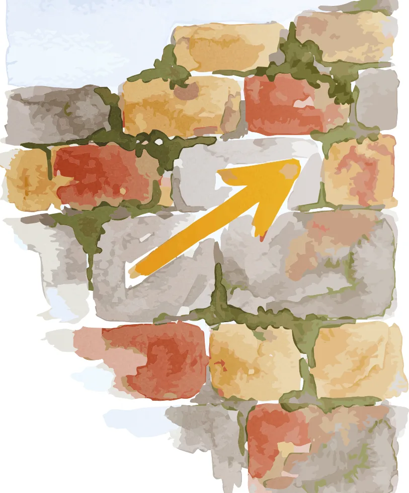

Camino Portugués por la Costa · De Oporto a Santiago
Lo que esconden las flechas amarillas
Behind the Yellow Arrows
Detrás de cada flecha amarilla hay algo que nadie te cuenta.
Behind every yellow arrow there is something nobody tells you.
Un libro de bolsillo con 25 lugares del camino, ilustrados en acuarela y contados en español y en inglés. Para leer cuando pares a descansar los pies.
En imprenta pronto. Reserva sin compromiso y te avisamos con el precio.



El libro
Este libro
Este libro no es una guía práctica: no da distancias ni albergues. Reúne 25 lugares del Camino Portugués por la Costa, de Oporto a Santiago, y cuenta algo pequeño de cada uno: una piedra, una leyenda, un plato.
Algunas historias vienen de hace siglos y otras de lo que pasa hoy en una plaza o en un puerto, pero todas están a pocos pasos del camino.
Hay una flecha amarilla en cada ilustración. ¿Las encuentras todas?
There is a yellow arrow in every illustration. Can you find them all?
- 84páginas a color
- 25lugares, de Oporto a Santiago
- 4fichas de gastronomía, clima, naturaleza y arquitectura
- A6de bolsillo, 105 × 148 mm
- ES · ENcada texto en español y en inglés
- 1flecha escondida en cada ilustración

El camino, página a página
Cuatro actos, de Oporto a Santiago
El libro sigue el Camino Portugués por la Costa en el orden en que se camina. Toca un lugar para ver su ilustración.
Acto I
Oporto y el Miño
Acto II
Tierras gallegas
Acto III
Las Rías Baixas
Acto IV
Los últimos kilómetros
Lugares
Una acuarela por parada
Cada lugar ocupa una doble página: a la izquierda su ilustración y a la derecha su historia.
Desliza para ver más
Por dentro
Así se ve abierto
Texto en español y, debajo, en inglés. Léelo en orden o ábrelo por donde quieras: como en el camino, cada parada se sostiene sola.
La autora
«Este libro nació de una idea sencilla: contar, entre Oporto y Santiago, todo lo que una flecha amarilla señala pero nunca explica.»
This book began with a simple idea: to tell, between Porto and Santiago, everything a yellow arrow points to but never explains.
Aldara Álvarez González
Diseñadora e ilustradora de Baiona. Ha escrito, ilustrado y maquetado el libro entero.
Ver su trabajo
Reserva
Reserva tu ejemplar
El libro está a punto de ir a imprenta y aún no tiene precio cerrado. Reservar no te compromete a nada.
- Nos dejas tu nombre, tu correo y cuántos ejemplares quieres.
- Cuando esté impreso te escribimos con el precio y las formas de pago y envío.
- Decides entonces si lo confirmas.